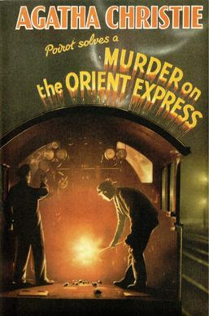

Notable Works by Agatha Christie
-
And Then There Were None (1939)
Short Synopsis: Ten strangers lured to a remote island under different pretexts. Once there, they are accused of past crimes by a mysterious host and begin dying one by one, mirroring a chilling nursery rhyme. Trapped and distrustful, the survivors realize the killer is among them—but who? A masterful tale of suspense, guilt, and retribution, this classic whodunit keeps readers guessing until the shocking end.

-
Murder on the Orient Express (1934)
Short Synopsis: "Murder on the Orient Express" follows renowned detective Hercule Poirot as he boards the luxurious Orient Express. During the journey, a passenger is brutally murdered, and the train is stranded by a snowstorm, trapping the killer among the remaining travelers. Poirot must unravel a web of secrets and alibis, leading to a shocking and morally complex resolution.
 -
The ABC Murders (1936)
Short Synopsis: "The ABC Murders" follows Hercule Poirot as he hunts a cunning serial killer who taunts him with cryptic letters and murders victims in alphabetical order—Alice Ascher in Andover, Betty Barnard in Bexhill, and so on. As public panic grows, Poirot races against time to uncover the twisted pattern before the next strike. But the case takes a shocking turn, revealing a deeper, more personal motive behind the killings.